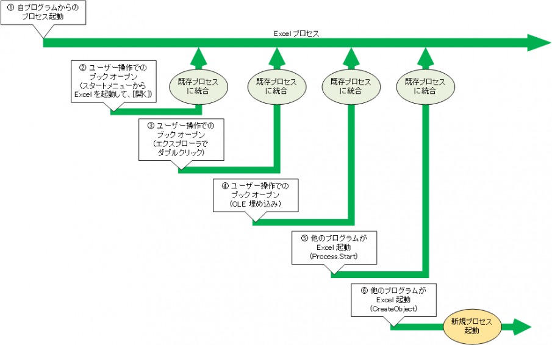
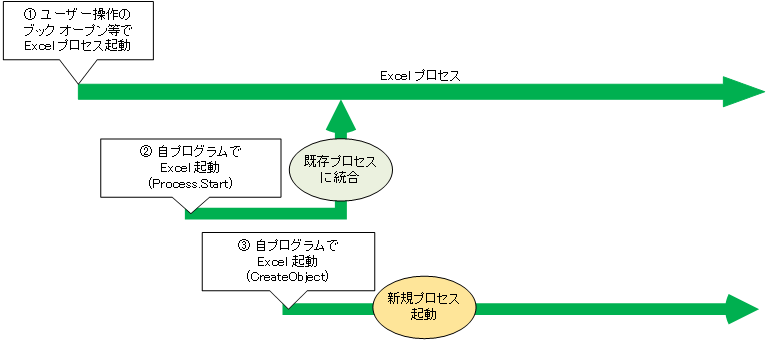
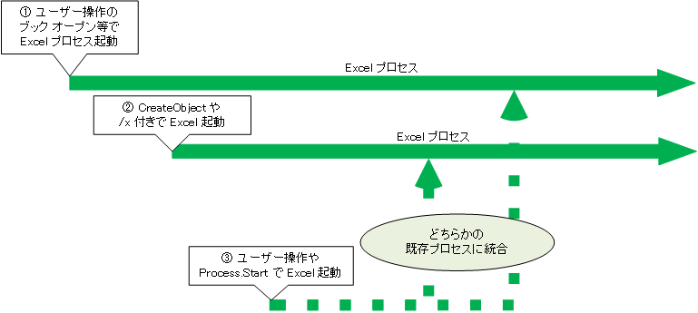

(※ 2017 年 1 月 17 日に Japan Office Developer Support Blog に公開した情報のアーカイブです。)
こんにちは、Office 開発 サポート チームです。
前回の投稿で Excel のプロセスを統合することについて記載しましたが、今回はこれに関連し、Office オートメーションを行うプログラムを開発するときにプログラムから操作する Office プロセスを自分のプログラム専用にできるか、という話を記載します。
Office オートメーションを行うプログラム開発を行う際、プログラムの処理が行いやすいよう、Office アプリケーションのプロパティを変更したり、画面を非表示にすることがあります。このとき、プログラムから行うプロパティ設定や画面の状態を、ユーザーが開いている他の Office ファイルには反映させたくないといった理由から、「ユーザーが起動する Office とプログラムが起動する Office でプロセスを分けたい」というご相談を頂くことがあります。
結論から申し上げますと、このような動作を完全に実現することはできません。
過去投稿で、Office では起動方法によって、既に起動されたプロセスがある場合には、これを利用して新しいファイルを開く動作となることをご紹介しています。
過去の投稿)
タイトル : Excel 2013 からのウィンドウ管理方法変更について – シングル ドキュメント インターフェイス (SDI)
アドレス : https://officesupportjp.github.io/blog/Excel 2013 からのウィンドウ管理方法変更について – シングル ドキュメント インターフェイス (SDI)/
タイトル : Office のプロセス インスタンス制御について
アドレス : https://officesupportjp.github.io/blog/Office のプロセス インスタンス制御について/
過去投稿でご案内している Excel の /x コマンドライン スイッチのように、新規プロセスで起動するよう変更できる起動方法もありますが、ショートカットをこのように変更しても、ユーザーが直接 Office 実行モジュール (Excel であれば excel.exe) を起動したり、または他の Office オートメーションを行うプログラムが Process.Start で Office プログラムを起動することもあり得ます。また、OLE 埋め込みオブジェクトのように新規プロセスで起動する方法が用意されていない起動方法もあります。
したがって、様々な対応を行ったとしても、プログラムから起動したプロセスを完全に自プログラム専用にすることはできません。Officeをオートメーションするプログラムを設計する場合は、このような点を十分に考慮の上、設計する必要があります。
補足)
リモートデスクトップで複数のユーザーが 1 つの端末にログインして Office を利用する場合、ユーザー間でプロセスが統合されることはありません。ただし、これを利用して意図的にログインしていないユーザーで Office を起動するような動作は、Office のサポート外の構成となります (Office のサーバーサイド オートメーションと呼ばれる構成に該当します) 。Office の起動ユーザーは、必ずログインしているユーザーで行う必要があります。
Office のサーバーサイド オートメーションについては、公開情報や本ブログの過去投稿でご案内しています。
タイトル : Office のサーバーサイド オートメーションについて
アドレス : https://support.microsoft.com/ja-jp/kb/257757
タイトル : Office サーバー サイド オートメーションの危険性について
アドレス : https://blogs.msdn.microsoft.com/office_client_development_support_blog/2012/04/11/office-2/
文章だけでは分かり辛い点もあるかと思いますので、以下に Excel 2013 以降の動作を例にどのような動作になるか、図を用いて説明します。特に記載のない箇所は全て、Excel 2013 既定の設定の場合です。
まず、以下に自分のプログラムが初めに Excel プロセスを起動した後、他の方法で Excel を利用する場合の動作を図解します。

図 1. Excel ブックを開いたときのプロセス統合の流れ (自プログラム → 他の方法)
次に、先にユーザー操作などですでに Excel プロセスを起動しているところに、自プログラムが Excel を起動した場合について図解します。(先程の図と操作順序が逆になるだけですが、分かりやすいよう別の図として掲載します。)

図 2. Excel ブックを開いたときのプロセス統合の流れ (他の方法 → 自プログラム)
また、複数のプロセスが存在する場合の動作はさらに複雑です。以下の図に示す通り、既存プロセスに統合される場合にどちらのプロセスに統合されるかは、明確に決められておりません。

図 3. Excel ブックを開いたときのプロセス統合の流れ (複数プロセスが存在する場合)
重ねての記載となりますが、これらの動作をふまえ、Officeをオートメーションするプログラムを設計する場合は、自ブログラムで起動する Office プロセスがユーザー操作や他のプログラムで起動されるプロセスと統合されても問題ない動作となるようご設計ください。
今回の投稿は以上です。
本情報の内容 (添付文書、リンク先などを含む) は、作成日時点でのものであり、予告なく変更される場合があります。